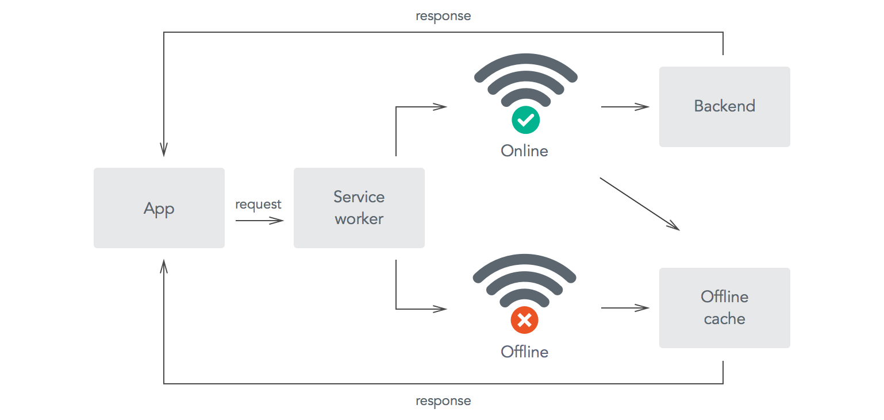

А зачем?
- Поднимаем конверсию
- Продвигаемся в поисковиках
- Повышаем удобство для пользователя
- И просто делаем крутые вещи, потому что мы можем!
Ключевые особенности, должно быть:
- Быстрым, адаптивным и прогрессивным
- Надежным
- Удерживающим
Быстр, Адаптивен и прогрессивен
Что подразумеваем:
- Адекватно работает на всех устройствах, начиная от утюга и заканчивая десктопом
- Должно работать без JS
- Не тормозит и не лагает, привет 60fps, пока jQuery-animation
- Быстро грузится < 1000ms
Надежным
- Независимым от качества соединения
- Безопасным - HTTPS (localhost)
- Самообновляемым
Удерживание пользователя
- Возможность сохранения на домашний экран / рабочий стол
- Используем Push-notification API
- Доступным для поиска
Установка
<link rel="manifest" href="/manifest.json">
Поля
- name - имя под иконкой
- short_name - короткое имя
- lang - на каком языке написаны параметры name и short_name
- dir - направление текста
- description - описание приложения
- icons - набор иконок разных размеров (src, sizes, type)
- background_color - цвет фона
Поля
- display - тип окна приложения, с поисковой строкой или без (fullscreen, standalone, minimal-ui, browser)
- start_url - стратовый url для приложения при запуске через иконку
- prefer_related_applications - существует ли родственное приложение
- related_applications -массив родственных приложений
- scope - определяет область навигации, при уходе с которой переходим к нормальному виду страницы
- theme_color - цвет поисковой строки
Service Workers
Представлят собой proxy-сервер между браузером и сервером, работает на стороне браузера, в фоновом режиме
Нет доступа к DOM. Работает в фоновом режиме.
Схема работы Service Worker

Подключение service-worker
- Регистрация
- Установка
- Активация
Регистрация
if ('serviceWorker' in navigator) {
navigator.serviceWorker
.register('./sw.js', { scope: './' })
.then(reg => console.log(reg));
}
Установка
const cacheName = 'sw-v1';
const files = ['/index.html', '/css/styles.css', '/js/app.js'];
self.addEventListener('install', (e) => {
e.waitUntil(cache
.open(cacheName)
.then( cache => cache.addAll(files))
);
});
Активация
self.addEventListener('activate', e => e.waitUntil(
caches.keys().then(cacheNames =>
Promise.all(
cacheNames
.filter(cache => cache !== cacheName)
.map(cacheName => caches.delete(cacheName))
)
)
));
События service workers
- Fetch
- Push
- Sync
Стратегии Service Workers
- Network First
- Fastest
- CacheOnly
- NetworkOnly
А можно ли работать с SW еще проще?
А чё там с поддержкой?

Lighthouse, тестируем:
- Производительность
- на PWA
- Accessibility
- Best practices
/* Можно использовать как расширение, для ручного тестирования, так и через npm команду в контексте CI */